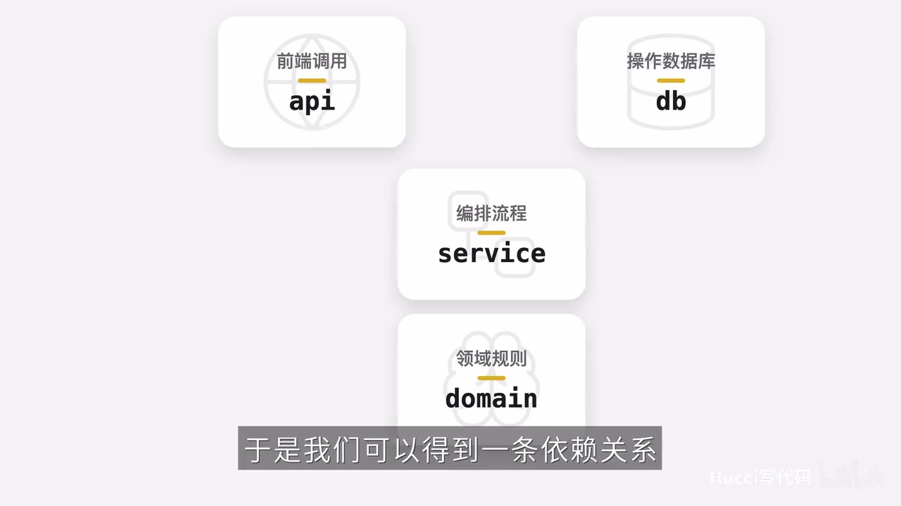

原视频 · 在线回看
点击后联网加载 B 站播放器；本地不下载整段视频。

原视频 · 在线回看
点击后联网加载 B 站播放器；本地不下载整段视频。
原标题：5 分钟学会写架构设计
UP 主：Hucci写代码
时长：6 分 50 秒
链接：https://www.bilibili.com/video/BV1CXet6gE6X/
阅读强度：标准
一个学生要报名一门课程。系统收到请求后，需要找到这个学生和这门课，判断课程还有没有名额、学生是否已经报过名；条件满足时，把学生加入名单，再保存结果。假如课程满了，系统需要告诉请求方报名失败。这些动作很容易被写进同一个函数：前半段查询数据库，中间穿插判断，后面保存数据或返回 HTTP 错误。
这样的函数可以工作，但当我们只想理解“什么条件下允许报名”时，要先从数据库查询和接口错误处理之间找出那几条判断。测试课程已满时，如果规则和数据库连接紧紧放在一起，测试也可能需要先准备数据库。将来更换数据库时，散落在流程里的查询语句也需要逐处检查。课程报名给了我们一个很小的例子，观察怎样把这些不同的工作分开。
报名规则关心的是课程和学生：课程已满就不能再加人，同一个学生也不能重复报名。编排流程关心这些工作何时发生：先取出学生和课程，再执行报名规则，最后保存结果。接口关心外部怎样发起请求、怎样得到响应；数据库操作关心数据怎样读取和保存。四项工作共同完成一次报名，却回答着不同的问题。
我们把它们分别放在 Domain、Service、API 和 DB 四层。Domain 是领域层，保存报名涉及的对象和规则；Service 是服务层，安排一次报名要调用哪些工作；API 是系统接收外部请求的入口；DB 负责具体的数据读写。这里的“层”帮助我们观察代码职责，并不意味着所有项目都必须建出同样数量的文件。这个示例拆分后代码和文件会变多；是否值得这样划分，要结合项目的变化和维护需要判断。
图里的关系值得仔细区分。代码依赖讲的是一个模块需要认识哪些定义：在此设计中，API 和 DB 分别依赖 Service 中的定义，Service 依赖 Domain；具体数据库实现遵守 Service 所声明的接口。一次请求运行时的调用顺序却从 API 进入 Service，再由 Service 调用数据库读取、调用领域规则，并让数据库保存结果。运行时 Service 会调用数据库提供的方法，这不要求 Service 的代码直接依赖某个具体数据库类。
领域层先建立两个模型：Student 表示学生，Course 表示课程。学生有编号和姓名；当前报名流程主要用编号，姓名在这个小例子里没有承担关键判断。课程有编号、容量和已经报名的学生名单。模型就是用程序中的对象表达当前问题需要的信息，让规则能够对这些信息进行判断。
报名行为放在 Course 对象中，因为成功报名会改变课程的学生名单。先看名单人数是否达到或超过容量；达到时抛出课程已满的异常。异常可以理解成程序用来表达特定失败情况的一种方式。未满时，再看学生是否已经在名单里；已经存在就抛出重复报名的异常。两个条件都没有触发时，才把学生加入名单，表示课程对象的报名状态发生了变化。按这段判断顺序，课程已满时会先遇到满员异常。
这段规则只需要课程容量、名单和要报名的学生。我们可以针对一个课程对象检查：容量已满时是否出现相应异常，学生已在名单时是否被拒绝，条件满足时名单是否增加该学生。规则与数据库连接分开后，检查这些领域行为时就可以直接准备所需对象。这里选择把报名方法放进课程类，是因为当前行为主要改变课程；其他用例也可以选择把行为放在类外，具体取决于要表达的关系。
有了报名规则，还需要有人安排完整的操作。Service 接收一个数据库对象，先从中取得对应的学生和课程，再调用课程对象的报名方法，成功后把更新后的课程保存回去。报名方法抛出异常时，流程会转去处理失败，不会沿成功路径继续保存。这样，Service 描述的是一次报名的工作顺序；课程能否接受学生的判断仍留给 Domain。
一个问题随之出现：Service 还没有确定用 SQLite 还是 PostgreSQL，怎么知道数据库对象能做什么？做法是在 Service 一侧定义一个 Database 接口。接口在这里是一份约定：数据库实现要提供 get_student、get_course 和 save_course，分别供流程读取学生、读取课程和保存课程。接口先说明需要哪些操作，具体如何查询和保存留给实现。
代码使用 ABC 和 abstractmethod 声明这些抽象方法。可以先把它理解为：Database 规定实现者需要补齐哪些方法，Service 按约定使用这些方法。图中可以看到接口声明与从 Domain 导入的 Course、Student；三个方法让流程讨论学生和课程，而不必把某一种数据库的查询细节写进流程。
DB 层随后导入这个接口，继承它，并实现约定的三个方法。SQLite 实现可以有自己的数据库语句，PostgreSQL 实现也可以有不同的语句；只要它们提供符合约定的操作，Service 就能沿用同一套报名流程。这里所谓“依赖倒置”，指 Service 不把自己绑死在具体数据库实现上，具体实现转而遵守 Service 需要的抽象。抽象表达流程需要的能力，数据库类提供具体做法。
这也解释了为什么运行调用和代码依赖可以朝不同方向：运行时，Service 通过接口调用传进来的数据库对象；看代码结构，具体 DB 实现要认识并实现 Service 所定义的接口。流程知道“需要读取课程”，无需因此写死“只能由 SQLite 的某个类完成读取”。接口也需要被正确实现，方法名字相同只是约定的一部分，实际行为仍需符合报名流程的需要。
API 层使用 FastAPI 定义报名端点，也就是外部可以访问的一个请求入口。它接收报名需要的信息和 Service，再调用 Service 完成流程。领域层抛出的“课程已满”或“已经报名”异常，在 API 层转换成 HTTP 异常，让系统外部能够收到适合接口的失败响应。这样领域规则不必依赖某个 HTTP 框架来表达报名失败。
API 需要一个 Service，却不必自己决定要把哪一种数据库绑定给它。把所需对象从外部提供给使用它的代码，叫依赖注入。这个词可以直接对应到报名例子：Service 需要数据库对象，创建 Service 时把数据库传进去；API 需要报名 Service，运行时再把组装好的 Service 提供给 API。接收对象的一方可以按约定使用它，具体选择放在组装处。
入口文件把几层连接起来。先用 SqliteDb('school.db') 创建数据库对象，再把这个对象传给 EnrollService(db)，得到报名服务。随后创建 FastAPI 应用并包含路由，通过依赖配置把报名服务提供给 API 使用。画面里的 dependency_overrides 关联 get_enroll 和已创建的服务，让入口处选定的对象进入请求处理流程。
这份组装关系让数据库选择集中在入口。教学示例准备了另一种实现后，可以在入口调整使用哪个实现，Service 中的报名流程无需因此改写。不过，真实数据库迁移还可能涉及连接配置、表结构、数据迁移和行为差异等工作；入口绑定能否调整，与整个迁移是否完成是两件需要分别检查的事。
一次报名就这样走完了：外部请求进入 API，Service 取出对象并安排操作，Course 根据规则决定能否加入名单，DB 保存变化。四层把不同职责显露出来，也带来了接口和组装代码。对于这个小例子，我们可以用它练习判断变化发生在哪里、每一部分需要知道什么；实际项目中还应权衡这些边界带来的清晰度和额外复杂度。
Database 接口由 Service 所需的三个操作构成，具体 DB 实现遵守该约定。get_student、get_course 和 save_course 分别为报名流程提供什么？